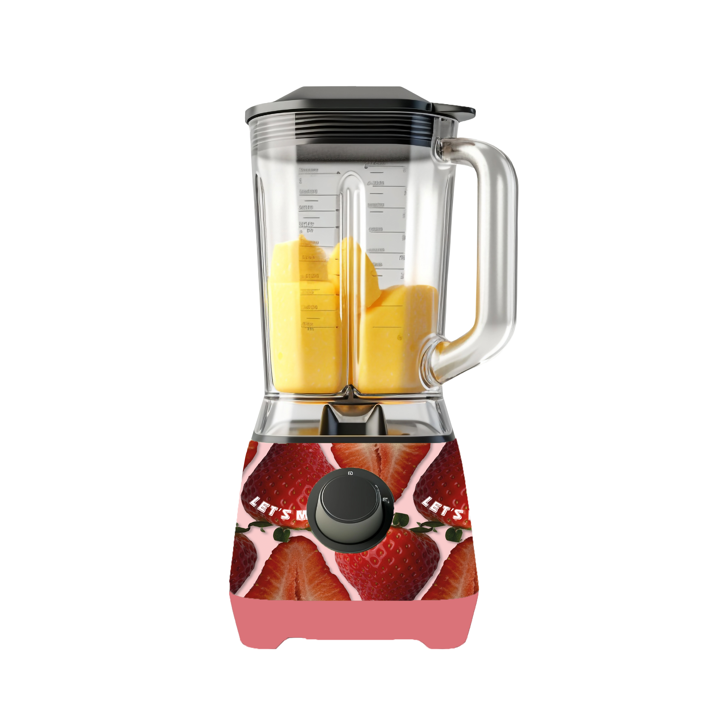
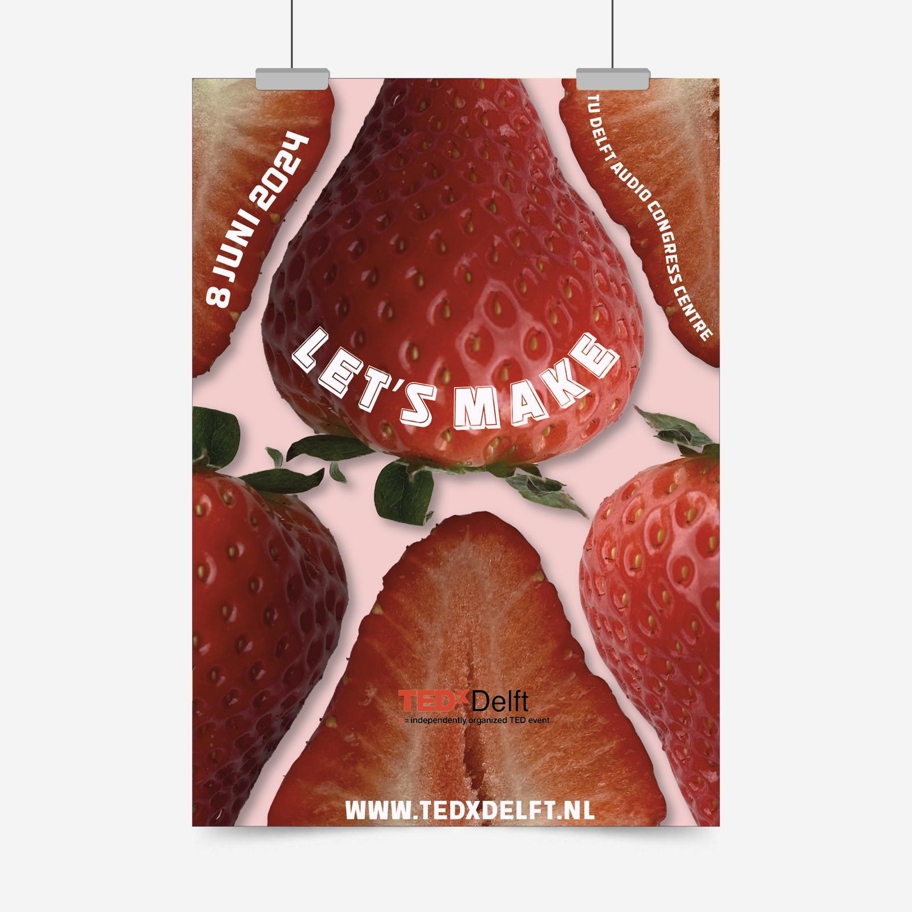
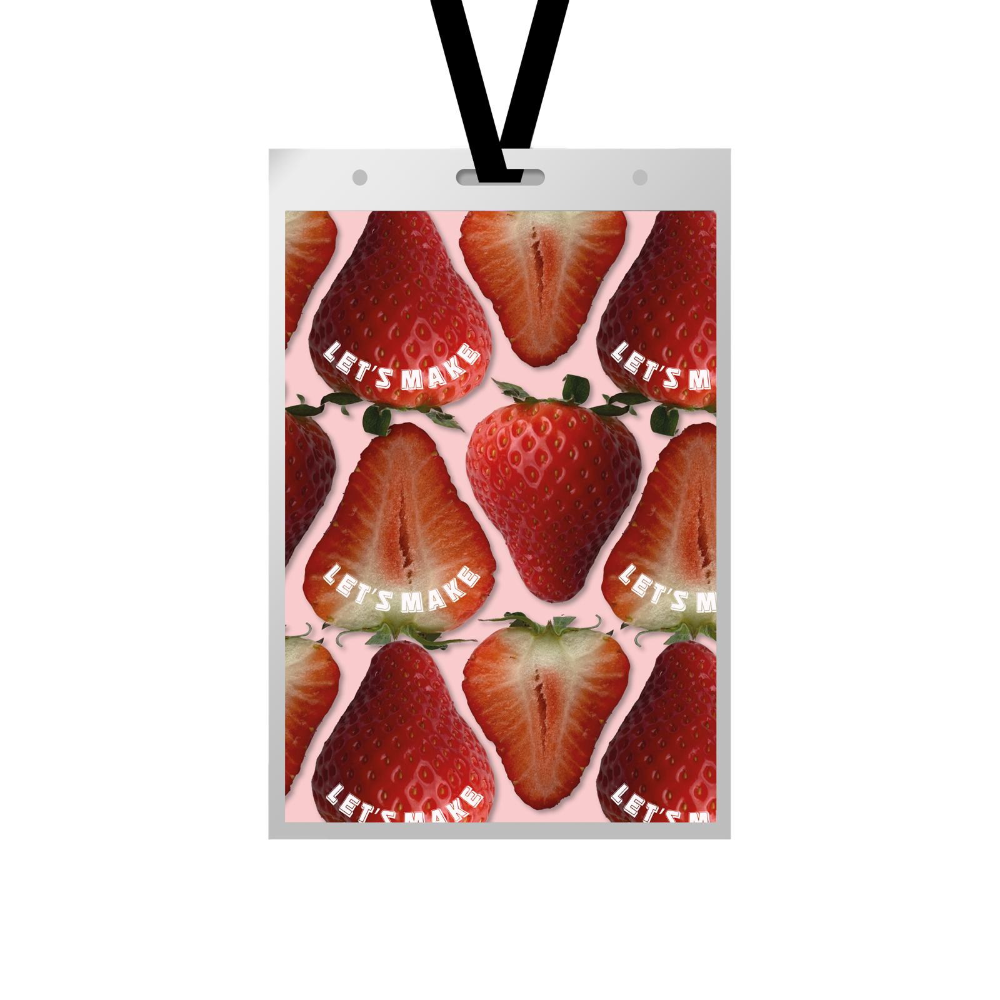
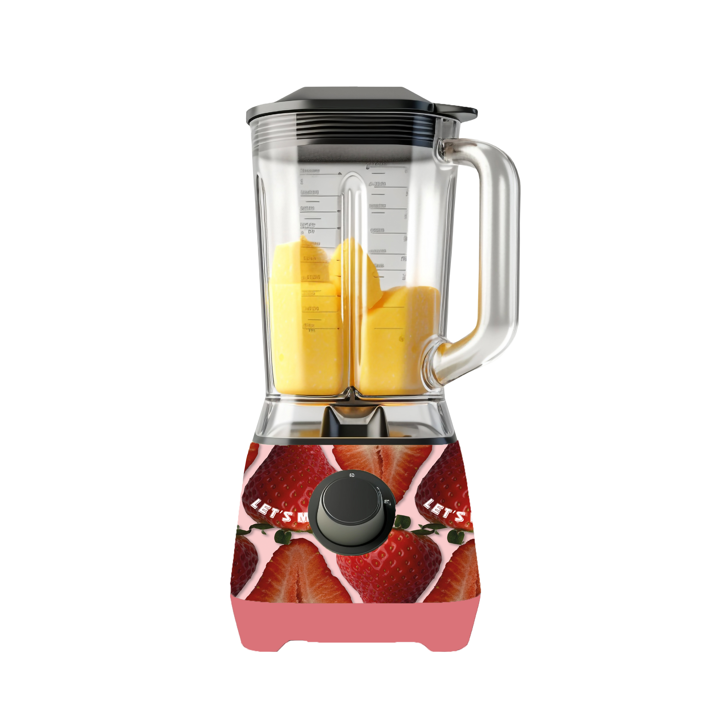
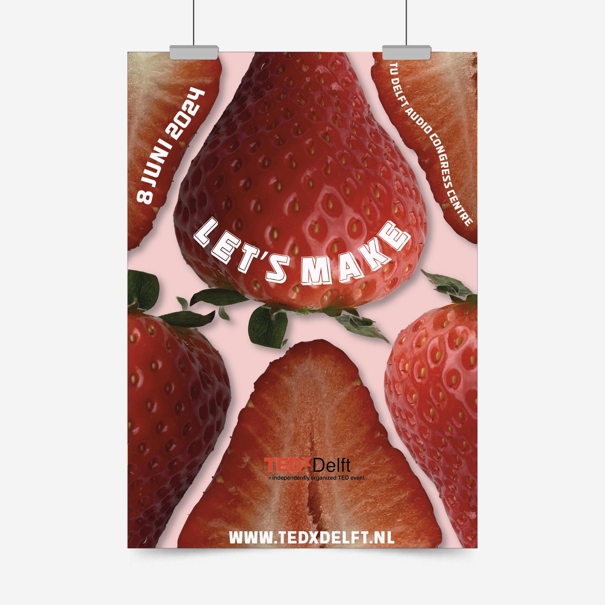
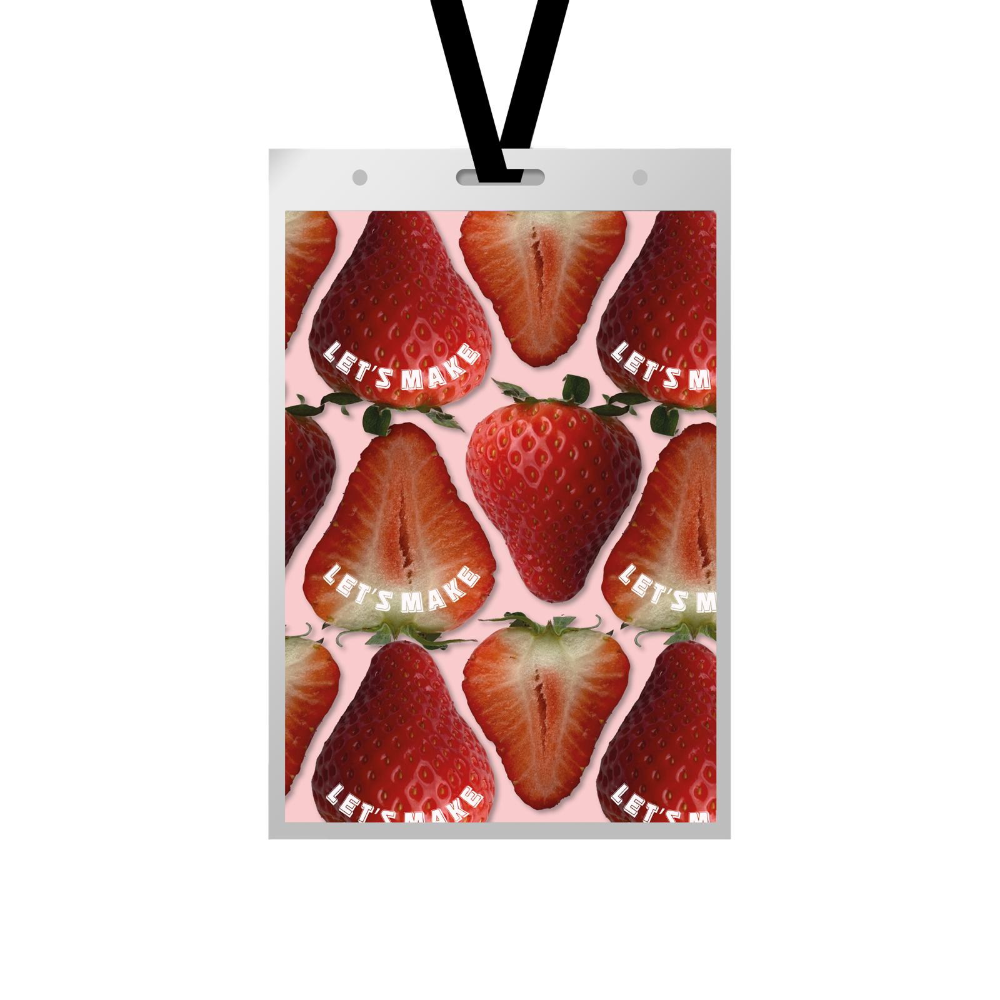

TEDxDelft
Vanuit school kreeg ik de opdracht om een visuele stijl te ontwerpen voor TEDx Delft met het thema “Let’s Make”. Ik heb gekozen om te werken met fruit als centraal beeld, omdat dit een frisse en positieve uitstraling heeft. Dat sluit goed aan bij TEDx Delft, waar mensen hun nieuwe ideeën en inzichten delen.
Bij deze visuele stijl moest ik drie toepasselijke middelen vormgeven die passen bij het event en het gekozen thema. Ik heb gekozen voor:
1. Een totebag, handig om goodies in te doen tijdens het event. Daarnaast kunnen bezoekers de tas ook buiten het event gebruiken, bijvoorbeeld om hun boodschappen of fruit in mee te nemen.
2. Een keychain, De keychain kan dienen als toegangsbewijs of naambadge, waardoor bezoekers makkelijk met elkaar in gesprek kunnen komen.
3. Een blender, In combinatie met het fruitthema en de slogan “Let’s Make” past dit goed: bezoekers kunnen hiermee hun eigen smoothies maken en tegelijkertijd terugdenken aan de ervaring van TEDx Delft.
Visuals
 





Details & Tools
- ToolsIllustrator, Photoshop
- PeriodeJuni 2024
- RolDesign